Amalinda Gamage
I am actively looking for faculty positions.
Publications | Talks | Teaching | Service

Hello, I'm Amalinda from Sri Lanka 🇱🇰. ආයුබෝවන්! (āyubōwan!)—a warm wish for a long and prosperous life in Sinhalese.
Central to my research is spectral optimization, specifically in the implementation of physical-layer techniques that enhance the coexistence and fairness of LPWANs. I also have a keen interest in all things RF—particularly unconventional low-power transceivers, which I believe will be essential to power the next billion IoT devices.
My research has had real-world impact. For example, LMAC was adopted into the LoRaWAN standard by the LoRa Alliance. Our efforts marked the very first industry-academia collaboration of the LoRa Alliance to have resulted in a technical standard: a collaboration between Semtech (France), the patent holder of LoRa, and NTU, SG. For these contributions, I was named one of the 2023 Honorees of the LoRa Alliance Contribution Award at LoRaWAN Live’24, an honor shared among contributors who advanced the LoRaWAN standard globally. Since 2023, LMAC has been integrated into the official LoRaWAN library. More recently, LMAC has also found its way into the firmware of some of Semtech’s newest LoRa radios. Consequently, LMAC now lives inside millions of LoRaWAN devices worldwide. Two of my other works on LPWAN reliability have also been licensed to industry through NTU.
I earned a Ph.D. degree in Computer Science from NTU, SG, and my Bachelor's degree in Electronic Engineering with first-class honors from SHU, UK. I learned the ABCs of research and much more from Prof. Mo Li, my PhD mentor. Prior to joining NTU, I was a lecturer at both SLIIT and UNIVOTEC in Sri Lanka. I am also an elected member of the Institution of Engineers Singapore (IES), a signatory of the Washington Accord.
News
[OCT'26]Hark accepted at MobiCom'26 (accp. rate 14%). PDF | Teaser.[JUN'24]Named a 2023 Honoree of the LoRa Alliance Contribution Award.[JAN'24]Spoke about "Minimizing on Air Collisions" at the LoRa Alliance webinar series. Watch.[OCT'23]LMAC now included in the official LoRaWAN implementation and RadioLib.
Further back in time...
[2022]CSMA Task Force initiated by the LoRa Alliance to integrate LMAC.
Publications & Standards
[Industry Standard] TR-013: Enabling CSMA for LoRaWAN {view pdf}
Amalinda Gamage+, Geoffroy de Guillebon++, Mo Li+, Miguel Luis++, Olivier Seller++
++Semtech, FR +NTU, SG. LoRa Alliance.
[SUMMARY] LMAC, my Ph.D. work that brings CSMA to LoRa, is now an industry standard. In 2022, we proposed LMAC to the LoRa Alliance, and the Alliance formed the CSMA Task Force (CSMA-TF) to take it forward. Within the CSMA-TF, we worked closely to find the best way to bring CSMA to LoRaWAN. We also modified LMAC together to suit global regulations. The CSMA-TF then forwarded TR-013 to the LoRa Alliance Technical Committee (TC), where the members voted to accept it in June 2023, and it became part of the LoRaWAN standard. This was the very first industry-academia collaboration in the LoRa Alliance to result in a technical standard: a collaboration between Semtech and NTU. For this work, my Ph.D. mentor (Prof. Mo Li) and I were named among the 2023 Honorees of the LoRa Alliance Contribution Award at LoRaWAN Live’24 in Germany (PR).
Since then, TR-013 has been part of the official LoRaWAN codebase. More recently, it has also been built into the radio firmware of newer generations of Semtech's LoRa radios. Consequently, LMAC is now embedded in millions of LoRaWAN devices. Thank you, Geoffroy, Miguel and Olivier at Semtech, and the LoRa Alliance, for this wonderful collaboration. Merci beaucoup !
CSMA for LoRaWAN webinar.
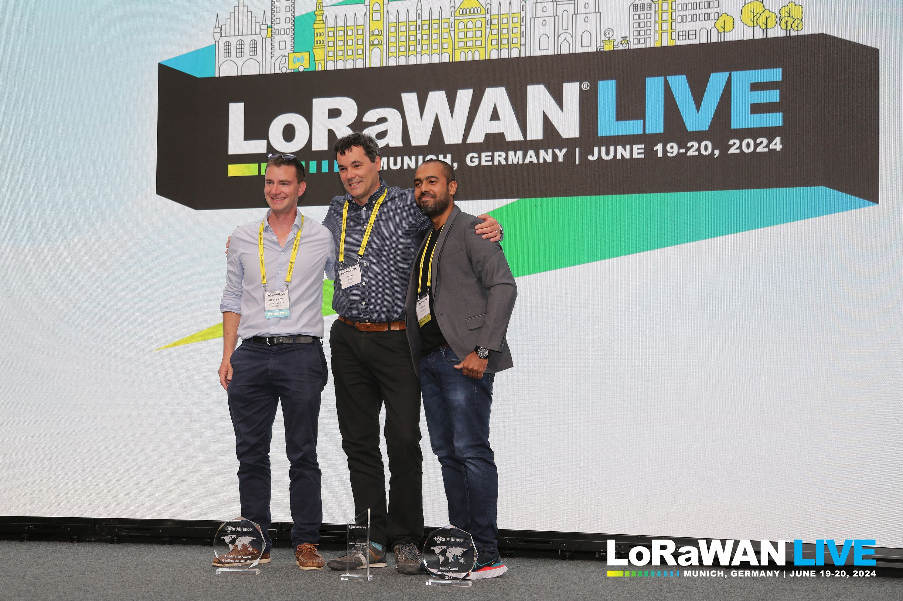
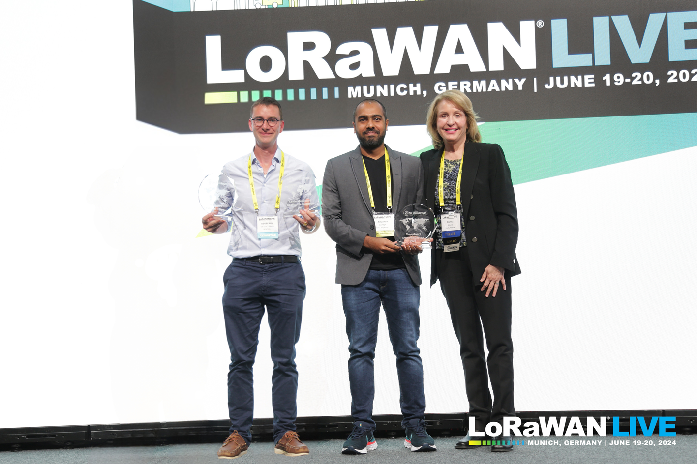
[MobiCom'26] Hark: Breaking Receiver Power Limits of LoRa {view pdf}
Amalinda Gamage, Pramuka Sooriya Patabandige, Spanddhana Sara, Ambuj Varshney. NUS, SG. ACM MobiCom, Austin, TX, USA.
[SUMMARY] On-demand downlinks can enable spontaneous actuation of end-devices. But this requires them to listen continuously, which costs about 43.5 mW on COTS LoRa radios. LoRaWAN Class-C enables always-on listening at the protocol level, but that energy cost drains a coin cell in under a day. In practice, only mains-powered end-devices run Class-C long term. Therefore, most end-devices operate under Class-A, where the gateway has to wait for an uplink to deliver a downlink. Hark aims to bridge the gap between what the protocol allows and what practical energy budgets can sustain. Hark is an ultra-low-power LoRa receiver that listens continuously for frames from any unmodified COTS LoRa transmitter. It achieves this through a hardware-software co-design. First, in hardware, it replaces the conventional PLL and mixer with an autodyning tunnel diode oscillator. The oscillator generates its own local carrier and mixes it with the incoming frame. One unmodulated emitter can injection-lock the oscillators of many Hark receivers, which keeps their local carriers stable. Second, in software, Hark proposes a novel multi-chirp stacking algorithm that detects LoRa frames at sub-Nyquist rates, even when frames fall below the noise floor. Sub-Nyquist sampling reduces both ADC and MCU power. Hark listens at just 1.90 mW, over 22× below the COTS receiver.
Project Website. 90-second teaser video.
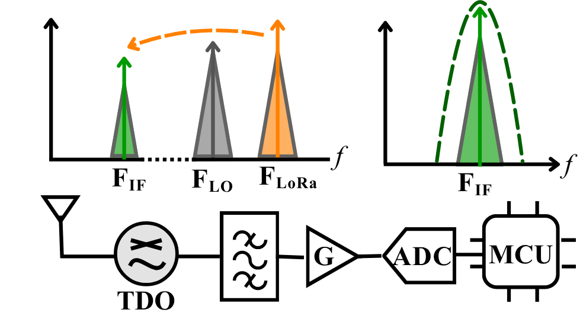
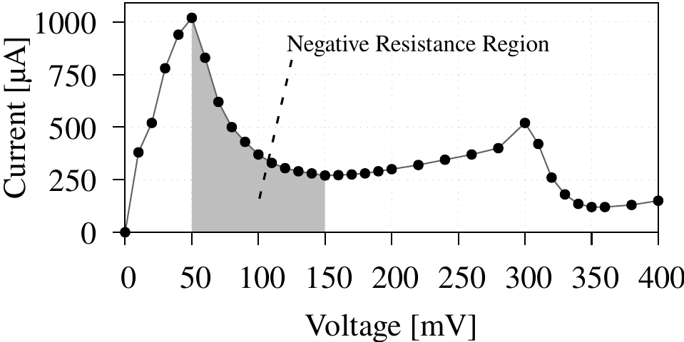
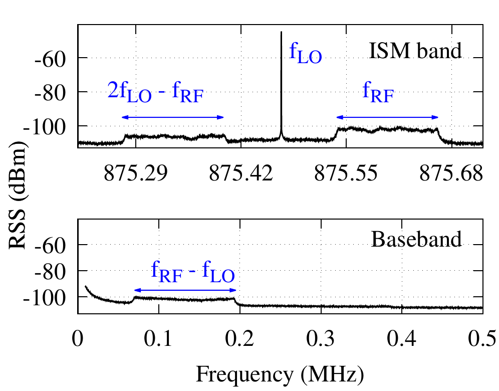
[MobiCom'24] SateRIoT: High-performance Ground-Space Networking for Rural IoT {view pdf}
Yidong Ren1, Amalinda Gamage3, Li Liu1, Mo Li2,3, Shigang Chen4, Younsuk Dong1, Zhichao Cao1
1MSU, USA 2HKUST, CN 3NTU, SG 4UF, USA. ACM MobiCom, DC, USA.
[SUMMARY] SateRIoT enables reliable IoT connectivity in rural areas by complementing satellite communication with LoRa. It experimentally demonstrates the temporal and spatial challenges of satellite links and effectively mitigates their impact on network performance through a bursty link model and a multi-hop flooding protocol. SateRIoT significantly improves overall network energy efficiency and latency, and it is implemented using cost-effective COTS hardware.
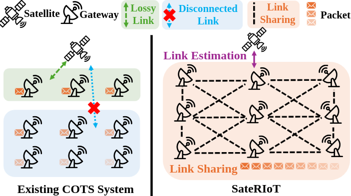
[MobiCom'20] LMAC: Efficient Carrier-Sense Multiple Access for LoRa {view pdf}
Amalinda Gamage1, Jansen Christian Liando1, Chaojie Gu1, Rui Tan1, Mo Li1
1NTU, SG. ACM MobiCom, London, UK.
[SUMMARY] This work implements collision avoidance across large-scale LoRa networks. CSMA is a technique used by many wireless protocols to avoid collisions. However, LoRa modulation is unique. A single LoRa channel can accommodate multiple frames simultaneously. LoRa frames also have the ability to traverse underneath the noise floor. Therefore, we need a CSMA protocol that doesn't debilitate LoRa's key advantages. LMAC is a simple protocol that does just that reliably with an extremely small energy overhead.
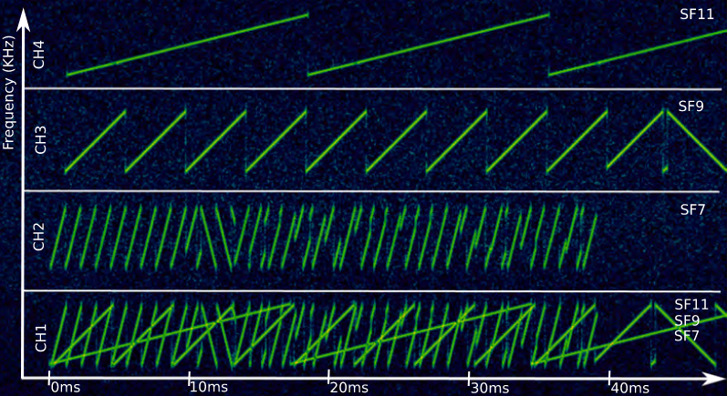
A video spectrogram of LMAC vs ALOHA showcasing how much more disciplined the spectrum is under LMAC-2 for the same network demand.
[TOSN'23] [SenSys'23] LMAC: Efficient Carrier-Sense Multiple Access for LoRa {view pdf}
Amalinda Gamage1, Jansen Christian Liando1, Chaojie Gu1, Rui Tan1, Mo Li1, Olivier Seller2
1NTU, SG 2Semtech, FR. ACM TOSN.
[Also invited for presentation at SenSys'23] {SenSys Proceedings}
[SUMMARY] This work extends LMAC, originally published in MobiCom'20. The extension examines several additional aspects of LoRa CSMA, such as the quantified limitations of RSS-LBT, how LMAC enhances weak LoRa transmissions, the impact of gradual adoption and coexistence of CSMA-enabled LoRa with ALOHA, global regulatory implications, and finally, how to comply with them.
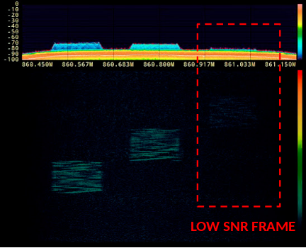
[ECRTS'25] LoRaHART: Hardware-Aware Real-Time Scheduling for LoRa {view pdf}
Soumya Ranjan Sahoo1, Amalinda Gamage2, Niraj Kumar3, Arvind Easwaran1
1NTU, SG 2NUS, SG 3IIT Goa, IN. IEEE ECRTS.
[SUMMARY] Prior works on real-time LoRa assume gateway capabilities that don’t scale well in practice, such as full-duplex operation or unlimited concurrent demodulation. This makes real-life deployment impractical. We designed LoRaHART from the ground up to work within the hardware limits of LoRa gateways. It accounts for two key constraints: the half-duplex nature of COTS gateways and their ability to demodulate at most eight frames concurrently. At the core, LoRaHART uses a TDMA scheduler with CSMA-based retransmissions when necessary, within a single superframe. On a 40-node COTS testbed, it achieves 98% PRR and 45% higher spectral efficiency than the best baseline.
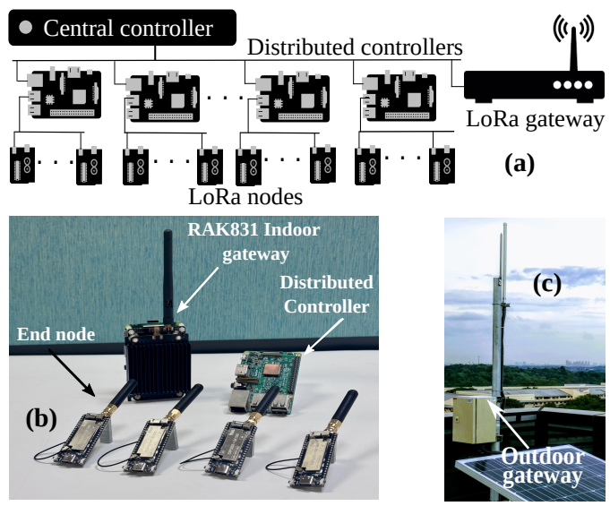
[TOSN'19] Known and Unknown Facts of LoRa: Experiences from a Large-Scale Measurement Study {view pdf}
Jansen Christian Liando1, Amalinda Gamage1, Agustinus Tengourtius1, Mo Li1
1NTU, SG. ACM TOSN.
[SUMMARY] We experimentally evaluate LoRa’s real-world performance using over 50 nodes across a 3×3 km testbed. LoRa can exceed 10 km under line-of-sight, but its range drops drastically in urban and indoor environments—by as much as 90%. We show that achieving long battery life requires tight parameter tuning; naïve configurations can cut node lifetime down to a year. We measure power profiles and derive lifetime models using real hardware and power measurement traces. We also profile the capacity of a real SX1301-based gateway and estimate the limits of its concurrency. Surprisingly, we find that using higher spreading factors (like SF12) supports more nodes in terms of PRR, due to lower collision rates, despite slower throughput. We then propose a simple algorithm to jointly optimize node lifetime and coverage. Finally, we highlight that LoRaWAN could add energy overhead and that it doesn’t always improve goodput, especially when downlinks are enabled.
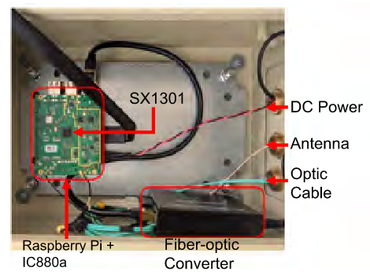
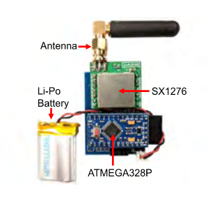
[GLOBECOM'16] JumboNet: Design of a Kinetic Energy Harvester for Elephant Mounted Wireless Sensor Nodes
Malitha Wijesundara1, Cristiano Tapparello2, Amalinda Gamage1, Yadhavan Gokulan1, Logan Gittelson2, Thomas Howard2, Wendi Heinzelman2
1NTU, SG 2Univ. of Rochester, USA. {view PDF}
[SUMMARY] We designed a kinetic energy harvester to power GPS tags on elephants using their natural movement. The device uses magnetic levitation and ferrofluid bearings to reduce friction and boost energy output. We collected 10 days of real acceleration data from an Asian elephant and tuned the system accordingly. The harvester generates ~89 J per day—enough to transmit location 24 times daily over 114 km line-of-sight, with a ~35 J surplus. This surplus can support higher update rates or fallback options like GPRS. The results show that long-term, maintenance-free tracking of wild elephants is feasible, which is critical as human-elephant conflict zones expand.
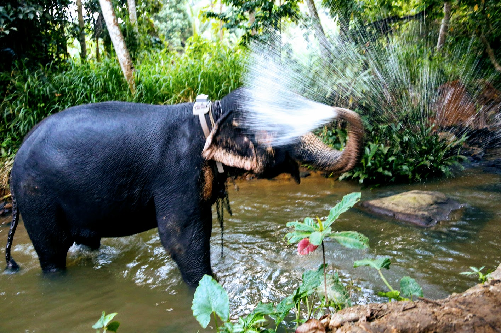 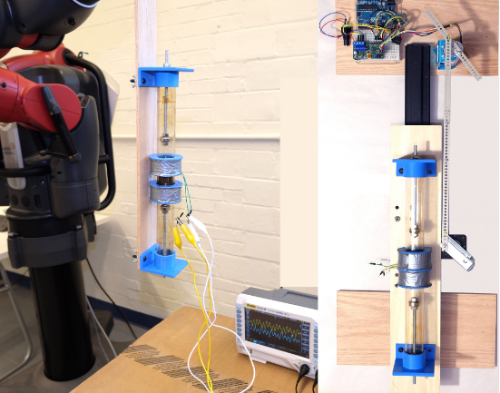
Technology Transfers
- Lead inventor of NTU invention TD-2023-404 and co-inventor of TD-2024-005, which improves LPWAN reliability, licensed to Better IoT Solutions (Singapore) through NTUitive in January 2024, with an inventor share of licensing revenue.
Service
[Kindly send review requests strictly to amalinda@nws.sg]
- TPC, IEEE ICPADS, 2024.
- Reviewer for ACM Transactions on Sensor Networks (TOSN), 2022—
- Reviewer for ACM Transactions on Networking (TON), 2021—
- Reviewer for ACM Transactions on Internet of Things (TIOT), 2021—
- Reviewer for IEEE Transactions on Wireless Communications, 2026—
- Reviewer for IEEE Transactions on Services Computing, 2026—
- Reviewer for IEEE Transactions on Mobile Computing, 2025—
- Reviewer for IEEE Transactions on Industrial Informatics, 2025—
- Reviewer for IEEE Internet of Things Magazine, 2023—
- Reviewer for IEEE Internet of Things Journal, 2022—
- Reviewer for IEEE Communications Letters, 2022—
Talks
- LoRaWAN CSMA to Minimize on Air Collisions, LoRa Alliance LoRaWAN Webinar Series, Jan 2024. Details
- LMAC: Efficient Carrier-Sense Multiple Access for LoRa, ACM SenSys, Nov 2023.
- On the Applicability of Kinetic Energy Harvesting for Real-Time Monitoring of Wild Elephants, SLIIT Research Seminar Series, Aug 2017.
Teaching
- LoRa Tools: free browser tools that make LoRa I/Q files for any SDR, and show step by step how a LoRa receiver turns chirps into symbols and symbols into the payload.
- Guest Lecture: Understanding LoRa: Fundamentals and Scaling to a Billion-Device Future,
[CS5272 - Embedded Software Programming], National University of Singapore, March 2025. - AY 2020:
- Teaching Assistant for
[CE3005: Computer Networks, CZ3006: Netcentric Computing], Nanyang Technological University.
- Teaching Assistant for
- AY 2019:
- Teaching Assistant for
[CE3005: Computer Networks, CZ3006: Netcentric Computing], Nanyang Technological University.
- Teaching Assistant for
- AY 2017:
- Assistant Lecturer for
[EC300: Embedded Systems Engineering], Sri Lanka Institute of Information Technology. - Assistant Lecturer for
[IT448: Hardware Security], Sri Lanka Institute of Information Technology. - Visiting Lecturer for
[EE60303: Microprocessor Based Systems], University of Vocational Technology.
- Assistant Lecturer for
Further back in time...
- AY 2016:
- Visiting Lecturer for
[EE60303: Microprocessor Based Systems], University of Vocational Technology. - Teaching Assistant for
[EC300: Embedded Systems Engineering], Sri Lanka Institute of Information Technology.
- Visiting Lecturer for
- AY 2015:
- Teaching Assistant for
[EC300: Embedded Systems Engineering], Sri Lanka Institute of Information Technology.
- Teaching Assistant for
- AY 2014:
- Teaching Assistant for
[EC300: Embedded Systems Engineering], Sri Lanka Institute of Information Technology.
- Teaching Assistant for
Miscellaneous
Web Template
This website is based on the design by Prof. Pat Pannuto.